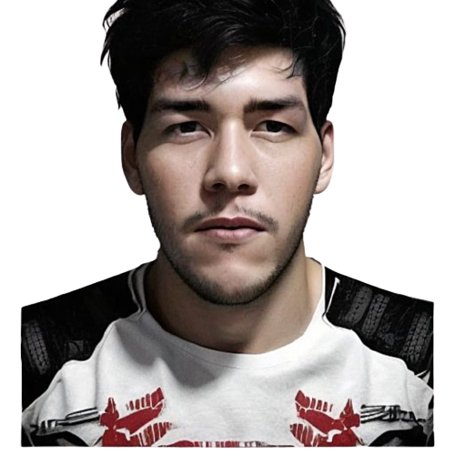

Lucas Cavalcanti
Desenvolvedor
Sou Fábio Lucas Cavalcanti de Souza, tenho 26 anos, fluente em inglês e conhecimento básico de francês. Curto música, jogos, livros e tecnologia. Atualmente estudo programação de sistemas pelo projeto cidadania LGBT, mas também atuei como técnico de enfermagem. Sou bastante comunicativo e gosto de trabalhar em equipe.